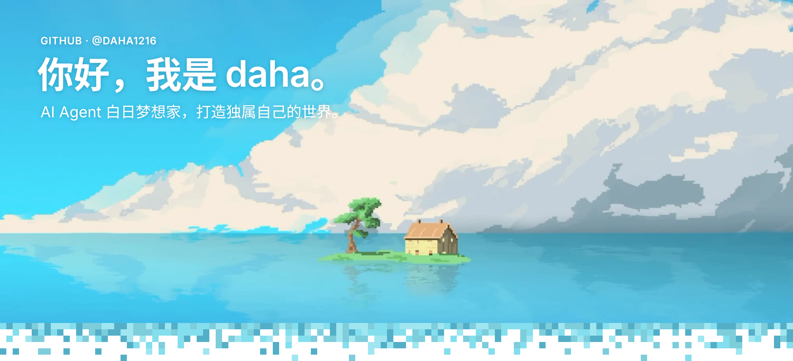
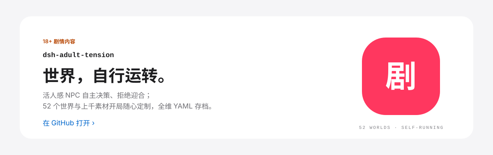
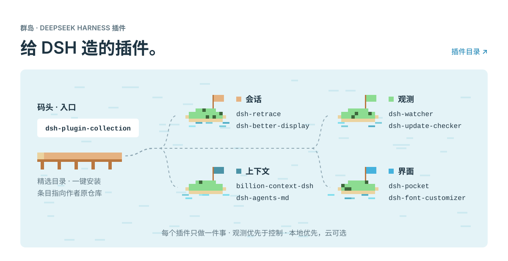
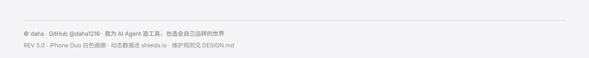

| 插件 | 做什么 | |
|---|---|---|
| 代表作 | dsh-adult-tension | 18+ 成人互动叙事：活人感 NPC、数十个世界上千素材、开局随心定制、世界自行运转。 |
| 入口 | dsh-plugin-collection | 第三方插件精选目录，一键安装，条目指向作者原仓库 |
| 会话 | dsh-retrace | 会话时光机：撤回 / 编辑重发 / 重新生成，产物版本化 fork |
| 会话 | dsh-better-display | 沉浸式阅读：执行步骤自动折叠，MCP-App 交互沙箱 fork |
| 观测 | dsh-watcher | 只读观测：模型耗时 / 费用统计，浮动面板 |
| 观测 | dsh-update-checker | 检查已装插件的上游更新与 changelog，只查不装 |
| 上下文 | billion-context-dsh | 模型自主决定何时压缩上下文（ACP）移植自 billion-context-pi |
| 上下文 | dsh-agents-md | 用户级全局 AGENTS.md：协作与反谄媚规则 |
| 界面 | dsh-pocket | 手机扫码，同步操控电脑端 DSH |
| 界面 | dsh-font-customizer | 界面 / 代码字体与字号定制 |
DSH 之外 — ClaudeGuard（Rust · Tauri 2）：Windows 上给 AI 桌面应用加一道网络出口门禁，只在约定代理出口放行，出口异常即刻熔断断网。
